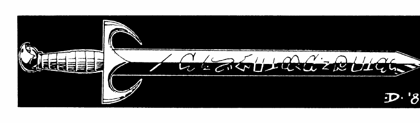

混沌生物与神祇
弑神者 是长有五十英尺翅膀、孔雀羽毛覆盖的巨 humanoid，常被混沌神派去杀死特殊敌人；克拉卡 Clakar 是来自梅尔尼博内的凶猛类人，善用爪击撕裂敌人；达尔齐猎犬 具狼犬身体、猛禽头与爪，成群猎杀并以爪爪咬攻击。
梅尔尼博内龙 是该族最可怕的盟友，吐息类似红龙但更强；长时间活动后会返回洞穴沉睡，睡眠年数等于年龄。唐布拉斯 Donblas 是法则阵营的正义制造者，驱逐到其他位面后等待重新介入。艾伦诺因 Elenoin 与格拉胡克 Grahluk 是来自不同位面的宿敌：前者为优雅的精灵状生物，后者为巨猿状战士，只为彼此的灭亡而战。
菲莉特 Fileet 是鸟类女士，40 英尺高、翼展 120 英尺的金鹰，能感知任何鸟类所见之物；格洛姆 Grome 是大地与元素力量的主人。哈阿沙斯塔克 Haaashastaak 是蜥蜴之主，能感知感知范围内的一切蜥蜴；凯尔曼 Kelmain 是来自混沌位面的金肤岩石状野蛮种族。
米尔克拉 Meerclar 是猫类女主人，常以剑齿虎雌兽出现，能借附近猫的眼睛观察并从中发动攻击。米莎 Misha 统治空气元素，免疫射入空中的物理武器，能以 20 级施法者水平使用天气和风法术。雾巨人 是沼泽中的白雾状邪恶巨人；莫达格兹 Mordagz 守护混沌之盾，按 15 HD 怪物战斗。
Myyrrhn 是擅长空战的飞行种族，敌人为巨鸮；Nihrain 马 是能变换形态的黑色魔法战马，只把自己借给直接服务于中立力量的凡人。Nuru-ah 是完全和平的巨牛，可治疗或复活生物；Oonai 是自然变形者，能模仿许多生物形态。
Quaolnargn 是深海领主，血红巨型章鱼，头顶嵌有脉动蓝宝石；Roofdrak 是犬类之主，直立的巨型猎犬，可召来 1–100 只恐狼。Straasha 是水元素领主，绿色皮肤、蓝绿色头发与胡须，可召来 3–18 名同类并以水波造成 8–48 点伤害。
吸血树 以可脱落的叶片攻击，叶片附着后持续吸血，离树 120 码或受害者无血时才返回；秃鹫狮 具狮身、秃鹫头与爪；Xiombarg 是混沌阵营的强大神，使用与 Stormbringer 相似、放出蓝光的武器。

上一节：阿里奥赫、月光姆与诸器物 · Arioch、月光姆 Moonglum 与诸器物
下一节：尼赫旺神话 · Nehwon Mythos